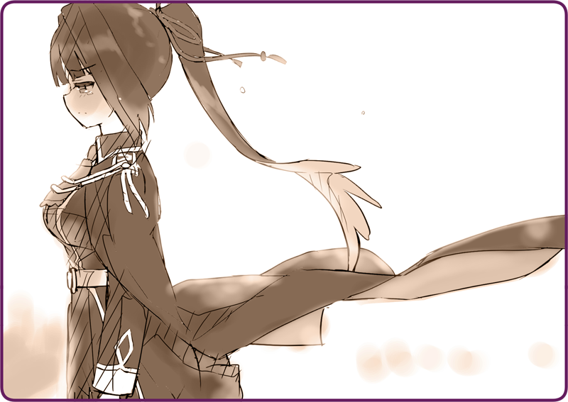

プリマドール・アンコール
06-12 雪華文様(12)－終－
雪羽「すこしは見られる格好になったな」
港の側の倉庫。そこが野戦基地代わりだった。
雪羽はあたしの格好を一瞥して、小さく鼻を鳴らした。
濃紺の軍服に身を包み、マントをたなびかせていた。雪羽の予備を借りたのだ。すこし胸周りがきついが仕方がない。久しぶりに袖を通して、身も心も引き締まる思いだった。
雪羽「機械人形は扱えるんだろうな」
雪羽「戦闘命令は受領したか」
苦渋の決断といった様子で、ナギさんはあたしのマスター登録を解除した。
もはや修理中でなく、皇軍の自律人形として戦線復帰した形になる。
雪羽「約半数が輸送船へ入ったところだ。鴉羽、貴様の任務は住民の避難警護だ。機械人形を３機与える。一緒に船に乗れ」
雪羽「知れたことだ、この島に残りローベリア軍を撃退する」
雪羽「貴様、私では役不足だと言いたいのか？ この程度のローベリア軍など……！」
雪羽「……少佐は忙しい。戻り次第、正式に命令を受領しろ」
倉庫を出て、港のほうへと足を向ける。
そこには６００屯ほどの輸送船が停泊していた。奥宮少佐たちが乗ってきた船だろう。いまは避難する島民達が長い列を作って、次々とその中へ詰め込まれている。軍人が、厳しい口調で荷物を諦めさせていた。
その行列から僅かに離れた場所。ぽつんと海を見つめている姿を見つけた。
ローサ「あ……」
あたしを見て、一瞬顔をほころばせる。
しかしその軍服を見て、さっと顔色を変えていた。
ローサ「その格好……」
ローサ「………」
その表情は硬い。混乱と失望の色を覗かせながら、視線を落としていた。
それでも、誤魔化すわけにはいかない。
彼女の前にかがみ込む。出来るだけ柔らかな笑みを浮かべて、鴉羽は説明した。
ローサ「……わたしは……」
ぎゅっと、その小さな唇を噛みしめた。
ローサ「皇国の戦闘人形は……嫌いよ」
それは、予想された答えだった。
鴉羽は微笑んでその言葉を受け止めた。
ポーチからローズヒップのジャムの小瓶を取り出す。
ローサ「……いい」
しかし、ローサは受け取らなかった。
ローサ「もう……友達じゃ、ないから」
微笑みを張り付かせたまま、あたしは立ち上がった。
ローサ「分かってる」
踵を返して、そっとその場を立ち去った。
ブーツを鳴らして、規則正しい歩幅で、行列の隣を通り過ぎていく。
ふと、海を見る。
朝焼けが真っ赤に、水平線を染め上げていた。

ぽろりと、目尻から冷却液がこぼれるのが分かる。
感情的になってはいけない。
戦闘人形に、感傷など不要なのだから。
島民に見られぬよう、そっと顔を背けると、必死に堪えようとした。
それでも、ぽろぽろとわき上がってくる思い。
嗚咽を堪えながら、あたしはさめざめと泣いた。
＊ ＊ ＊
軍船の煙突から、黒煙が上がるのが分かる。
エンジンに火を入れたようだ。出港まであと僅かだ。
雪羽「鴉羽、乗船の時間だ」
雪羽「呂１３号から１５号を使え」
倉庫の中には、ずらりと無骨な機械人形が並んでいる。
その数はざっと１５機ほど。そっと前に立つと、目を閉じて意識を集中した。
雪羽「鴉羽？」
雪羽「なにをしている。なぜ１号から起動させる？ いや……」
そこにある機械人形、その全ての瞳が赤く発光する。
雪羽「貴様はなにをしているんだ！ 機械人形ひとつまともに扱えないのか！？」
雪羽「なに……？」
雪羽「なにを言っている？ ふざけた真似をするな！」
雪羽「………っ！？」
雪羽の目が真っ赤に発光する。
しかし彼女は指揮権を奪い返せないでいる。
雪羽「なっ！？」
雪羽「だからどうした！」
雪羽「それは命令とは違う！」
雪羽「人形が、なにを勝手な……」
そう、勝手なことだ。
あたしはずっと命令を待ちわびていた。自分の生きる理由を与えて欲しかった。
だから、ナギさん……マスターの言葉は理解できなかった。
雪羽「皇国の偉大なる勝利のためだ！」
そっとポーチを上から撫でる。小瓶の感触。一緒に暖炉の前で食事をして、笑い合って、友達だと言ってくれて……。
雪羽「なにを言っているのか分かっているのか！？」
雪羽「やめろ、鴉羽……やめろ！」
機械人形に指示を出すと、じりじりと雪羽に詰め寄っていく。
＊ ＊ ＊
ゆっくりと船が出港していく。
出船前はすこし軍人といざこざがあったが、そもそも一刻を争う状況だ。
鴉羽と機械人形。あとは少数の守備隊が島に残り、そして最後の別れとなった。
あたしの背嚢からは、微かに黒い煙が漏れ出している。
機械人形を指揮していると、胸にちりちりとした灼き付く感覚がある。マスターの言ったとおりだ。あたしは直ってなんかない。一時的に指揮機能が戻ったけれど、結局は論理機関が不可に耐えきれないだろう。でも、たった一日頑張ればいいのだ。やってみせる。
船に背を向けようとした時だった。
ナギ「鴉羽ーーーーーーーーー！！！！！！」
海の向こうから、声が響いた。
満員の甲板。マスターが身を乗り出して声を上げている。
ローサ「鴉羽さーーーーーーーーん！！！！」
同じく、小さな少女の姿も。
普段あんなに大人しい子が、身を震わしてあらん限りの声で叫んでいる。
ナギ「ボクはキミを直す！ どんな形になっても、もう一度直して見せる！！！！ だから………待っていてくれ……！！！」
半ばかすれた声。
聴覚機能を最大に増幅して、やっと聞き取れる声。
ローサ「ごめんなさい、鴉羽さん……！」
ローサ「わたし、ひどいこと言った……！ でも、本当は違うの……！」
ローサ「一緒にいられて楽しかった……！ ずっとずっと、友達でいたかった……！」
ローサ「だから、死なないで………！」
軍船がひときわ大きな黒煙を吐き出す。
その音に、二人の声はかき消えてしまっていた。
それでも、鴉羽には十分だった。
この戦いに生き残っても、無傷ではいられないだろう。
もし、論理機関が無事だったら、修復できるなら……。
それは、願いのような言葉だった。
爆音が響く。
雪上に、まるで華のように炎が咲いていた。
ローベリア軍の砲撃が始まったのだ。
もう、泣いてはいられなかった。
さっと右手を挙げると、機械人形が一糸乱れぬ動きを見せる。
爆炎たなびく戦場へと、鴉羽は駆けだした。
その先に一握の光があることを、ただ信じて。
執筆：丘野塔也 挿絵：まろやか ＣＶ：楠木ともり（鴉羽）
©VISUAL ARTS / Key